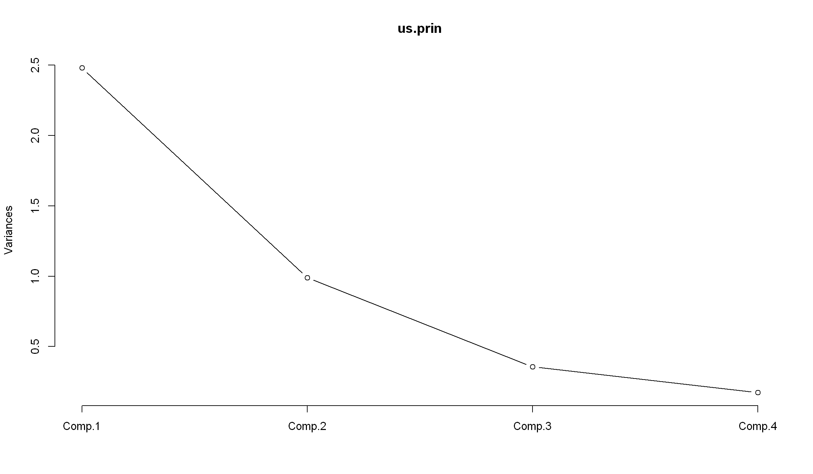

개념
서로 상관성이 높은 변수들의 선형결합으로 만들어 기존의 상관성이 높은 변수들을 축소하는 기법이다.
요인분석과 다르게 요인의 이름을 명명하지 않고 제1 주성분, 제2 주성분 등으로 표현된다.
주성분분석의 결과에서 누적기여율 (cumulative proportion)이 85% 이상이면 주성분의 수로 결정할 수 있다.
또한
scree plot을 그려 기울기가 급격히 줄어드는 전단계로 주성분의 수를 선택한다.
R실습
1973년 미국 50개주의 100,000 명의 인구 당 체포된 세 가지 강력범죄수(assault,murder, rape)와 각 주마다 도시에 거주하는 인구의 비율로 구성된 데이터 셋
변수들 간의 척도의 차이가 상당히 크기 때문에 상관행렬을 사용하여 분석한다.
특이값 분해를 사용하는 경우 자료 행렬의 각 변수의 평균과 제곱의 합이 1로 표준화 되었다고 가정할 수 있다.
'data.frame': 50 obs. of 4 variables:
$ Murder : num 13.2 10 8.1 8.8 9 7.9 3.3 5.9 15.4 17.4 ...
$ Assault : int 236 263 294 190 276 204 110 238 335 211 ...
$ UrbanPop: int 58 48 80 50 91 78 77 72 80 60 ...
$ Rape : num 21.2 44.5 31 19.5 40.6 38.7 11.1 15.8 31.9 25.8 ...- 산점도
princomp vs prcomp
둘의 차이는
princomp는 원데이터의 상관계수 또는 공분산행렬에 고유값 분해를prcomp는 원데이터에 특이값 분해를 적용하여PCA를 수행한다는 것이다.
Importance of components:
Comp.1 Comp.2 Comp.3 Comp.4
Standard deviation 1.5748783 0.9948694 0.5971291 0.41644938
Proportion of Variance 0.6200604 0.2474413 0.0891408 0.04335752
Cumulative Proportion 0.6200604 0.8675017 0.9566425 1.00000000다시 돌아와서
us.prin <- princomp(USArrests,cor=T)
result <- summary(us.prin)
screeplot(us.prin, npcs=4,type="lines")
- 누적기여율을 보았을 때 제 2주성분까지의 채택이 적절하다고 판단된다.
- 또한 screeplot을 그려본결과 분산 감소 기울기가 급격히 줄어들기 전 시점인 2시점에서 제 2주성분을 채택하는 것이 적절하다고 판단된다.
Loadings:
Comp.1 Comp.2 Comp.3 Comp.4
Murder 0.536 0.418 0.341 0.649
Assault 0.583 0.188 0.268 -0.743
UrbanPop 0.278 -0.873 0.378 0.134
Rape 0.543 -0.167 -0.818
Comp.1 Comp.2 Comp.3 Comp.4
SS loadings 1.00 1.00 1.00 1.00
Proportion Var 0.25 0.25 0.25 0.25
Cumulative Var 0.25 0.50 0.75 1.00\(Comp1 = 0.536 \times Muder + 0.583 \times Assault + 0.278 \times UrbanPop + 0.543 \times Rape\)
제 1주성분은 범죄중에서도
muder, Assault와 관련있는 변수라고 볼 수 있다.아래는 각 주성분의 선형식을 통해 각 지역별로 얻은 결과이다.
| Comp.1 | Comp.2 | Comp.3 | Comp.4 | |
|---|---|---|---|---|
| Alabama | 0.9855659 | 1.1333924 | 0.44426879 | 0.156267145 |
| Alaska | 1.9501378 | 1.0732133 | -2.04000333 | -0.438583440 |
| Arizona | 1.7631635 | -0.7459568 | -0.05478082 | -0.834652924 |
| Arkansas | -0.1414203 | 1.1197968 | -0.11457369 | -0.182810896 |
| California | 2.5239801 | -1.5429340 | -0.59855680 | -0.341996478 |
| Colorado | 1.5145629 | -0.9875551 | -1.09500699 | 0.001464887 |
biplot은 원 변수와 주성분 간의 관계를 그래프로 표현한 것으로 그래프를 통해 각 주성분의 의미를 해석하고 각 개체들의 특성을 파악할 수 있다.
화살표는 원 변수와 주성분의 상관계수를 의미하며, 주성분과 평행할수록 상관계수가 크므로 해당 주성분에 큰 영향을 끼친다.
그리고 화살표가 같은 방향으로 인접해 있을수록 같은 주성분으로 생성될 수 도 있음을 알 수 있다.
제 2주성분을 기준으로
Urbampop은 다른 변수들과 방향이 다르므로 상관관계가 낮다.제 1주성분을 기준으로 범죄와 관련된 3변수들은 같은 방향으로 인접해 있는 것을 확인할 수 있다.
여기서 이상치인 도시는
Vermont, West Virginia등은 변수 방향, 상관관계가 동떨어져 이상치로 판정될 수 있는 데이터이다.만약 이상치의 특성을 파악하라는 문제가 출제된다면, 위 결과에서 이상치라고 판단되는 값들 중
West Virginia는 범죄비율들과 도시인구비율이 적으므로 “범죄가 없는 시골” 이라고 해석하여 분석 결과를 본 미국 시민들이 그 도시로 몰릴 수도 있다고 판단할 수 있다.